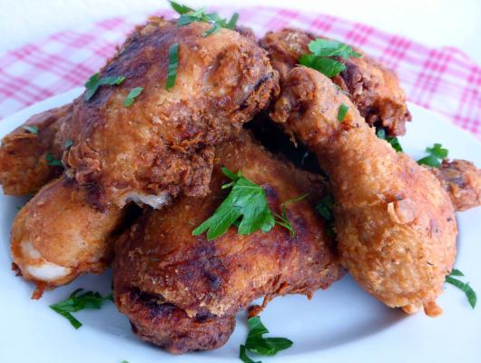

Crispy Southern Fried Chicken

description
This classic recipe is made-from-scratch Southern fried chicken at its
easiest. Crispy and juicy, it's sure to be a family favorite. There's also
no need for a long marinade in buttermilk, so you don't have to plan
ahead. The two-part batter simply consists of dredging the chicken in a
milk and egg mix, then giving it a quick shake in seasoned flour. This
dish calls for bone-in pieces—however, other recipes use boneless chicken
breasts or boneless chicken thighs with equally delicious results. Serve
the chicken alongside mashed potatoes, coleslaw, creamed corn, or another
vegetable side dish.
Ingredients
- 1 1/2 cups milk
- 2 large eggs
- 2 1/2 cups all-purpose flour
- 2 tablespoons salt, plus additional for sprinkling
- 2 teaspoons black pepper
- 4 pounds bone-in skin-on chicken pieces
- Vegetable oil, for frying
Preparation
-
Pour the buttermilk into a tray or bowl add one teaspoon of salt, mix through and place the chicken pieces into the buttermilk. Depending on the size and shape of your bowl you may need a little bit more buttermilk in order that the chicken is covered. Cover with some cling film and place in the fridge for up to 8 hours. Remove before frying to give enough time to bring the meat up to room temperature.
-
In a dish or bowl combine the flour, half teaspoon of salt, smoked paprika, thyme and pepper. Combine with your fingers or a fork.
-
Remove the chicken from the buttermilk marinade and dispose of the marinade. Shake off most of the drips and then dredge the chicken in your flour mix making sure each piece is covered completely.
-
Heat about 1.5cm / 0.5 in. of oil in a heavy bottomed wide pan. While this is heating up you can get a wire rack ready to drain the chicken. I do this by placing kitchen paper over the rack.
-
The oil temperature should be about 170°C / 340°F for frying. I don’t check with a thermometer but by putting a piece of bread in the oil and it is ready when it fizzes and turns brown quickly. The time the oil takes to heat up will depend on the thickness of the metal of your pan, your stove top and the quantity of oil you have used.
-
You will probably have to cook in batches so as not to over load the pan. I start with the thighs which need a little bit more time than the legs. Place each one carefully in the pan and fry, covered, on a good strong simmer for anywhere between 8 to 12 minutes on each side. The heat needs to be high enough to give you a nice brown colour and a crisp finish. Remove and set on the rack to drain. Then do the same with the legs, giving them a couple of minutes less than the thighs.